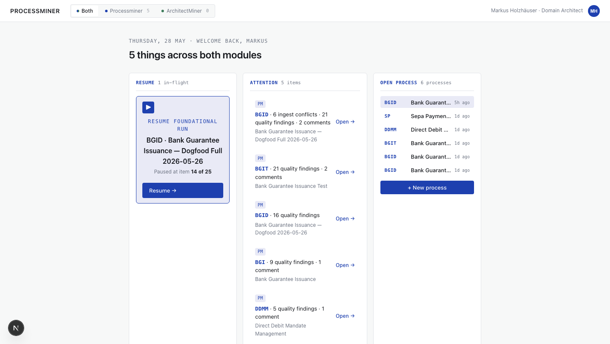
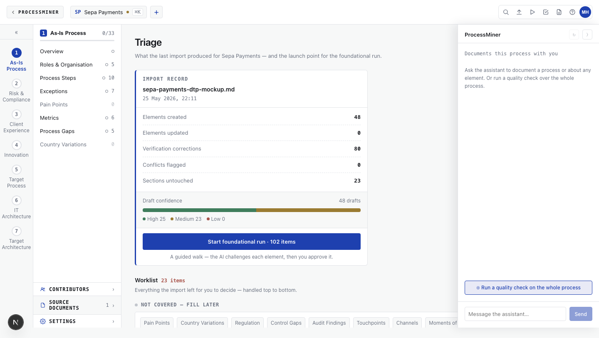
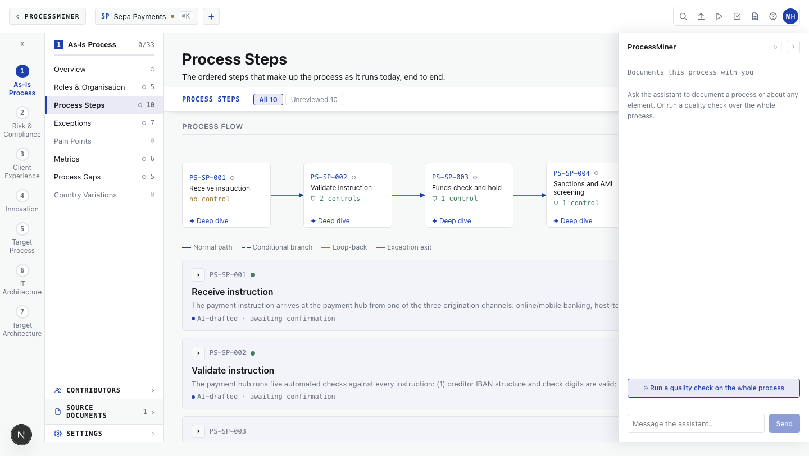

Processminer pairs your subject-matter expert with an AI interviewer, drafts every section as you go, and shows the source for every sentence. The SME approves block by block. What ships is complete, cited, and ready for the next audit.

Senior SME time is the bottleneck. "Just let AI write it" sounds great until the AI confidently invents the part nobody actually said. Compliance teams notice. Auditors notice.
Every sentence shows who said it and where. What's confirmed looks confirmed. What's still a draft looks like a draft. Nothing is hidden, nothing is invented, nothing ships without your SME's nod.
The same record serves the regulator, the transformation lead, and the operations team. No parallel decks, no stale Confluence pages, no "let me find the latest version."


Wiki lives on the analyst's filesystem. git diff is the audit log. Model inference runs via Anthropic API — see slide 3 for the full trust model.